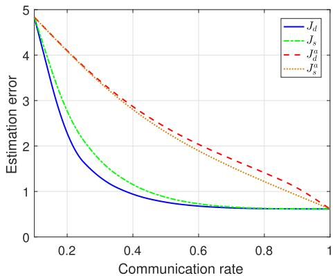
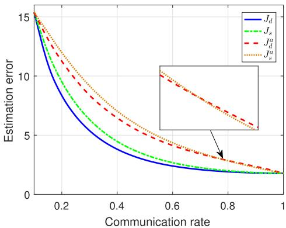
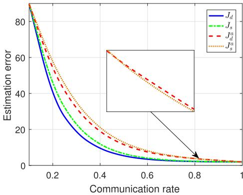

这是本系列的最后一课！需要回顾前几课的内容：确定性 vs 随机性协议（第 2 课）、触发条件反转（第 3 课）、隐密条件（第 4 课）、Theorem 3 & 4 的反转结论（第 5 课）。实验只看结果——理论分析已在前面讲完了。
1. 标量系统实验设置
论文使用了一个 标量 LTI 系统 进行仿真验证：
参数设置：
| 参数 | 值 | 含义 |
|---|---|---|
| $A$ | $-$0.99 | 系统动力学（接近不稳定，靠近单位圆边界） |
| $C$ | 1 | 观测矩阵 |
| $Q$ | 0.25 | 过程噪声方差（$\sigma_w^2$） |
| $R$ | 0.16 | 观测噪声方差（$\sigma_v^2$） |
| $|A|$ | $<$ 1 | 系统稳定条件 |
选择 $A = -0.99$ 非常有意思——它非常接近 1，意味着系统动态 衰减极慢，误差容易累积。这种"最坏情况"设置最能凸显不同协议在攻击下的差异。
2. Table I & II：关键数值结果
Table I：正常情况下的性能对比
| 协议 | 通信率 $\lambda$ | 期望误差 $J$ | 备注 |
|---|---|---|---|
| 确定性 $f_d$ | 0.3 | $J_d = 0.25$ | 正常，$\delta = 1.377$ |
| 随机性 $f_s$ | 0.3 | $J_s = 0.32$ | 正常，$\bar{h} = 5$ |
| $J_d < J_s$ ✓ — Theorem 3 验证 | |||
Table II：攻击下的性能对比
| 协议 | 通信率 $\lambda^a$ | 期望误差 $J^a$ | 备注 |
|---|---|---|---|
| 确定性 $f_d^a$ | 0.8 | $J_d^a = 8.74$ | $\delta^a = 0.623$（Algorithm 1 找到） |
| 随机性 $f_s^a$ | 0.8 | $J_s^a = 1.52$ | 调整 $\tilde{\Pi}$ |
| $J_d^a > J_s^a$ ✓ — Theorem 4 验证，且 $J_d^a / J_s^a \approx 5.75$ 倍！ | |||
3. Fig 2：不同通信率下的性能对比

这张图直观地展示了 Theorem 3 和 Theorem 4 的结论：
- 正常情况（实线）：蓝色（确定性）曲线在橙色（随机性）曲线下方，$J_d < J_s$
- 攻击后（虚线）：两条曲线都上升了，但蓝色（确定性）上升得更剧烈，最终在橙色上方，$J_d^a > J_s^a$
- 两条虚线的差距随 $\lambda$ 增大而增大——通信越频繁，确定性协议在攻击下的相对劣势越大
4. Fig 4 & 5：Monte Carlo 仿真验证
论文使用 10,000 次 Monte Carlo 仿真 验证理论分析的正确性。每次仿真独立运行，统计估计误差协方差的均值。
📊 Fig 4：正常情况 $\gamma = 0.3$
两种协议通信率 $\gamma_d = \gamma_s = 0.3$，估计误差协方差随时间演化。确定性协议的误差协方差始终低于随机性协议，且更快收敛到稳态。
📊 Fig 5：攻击后 $\gamma = 0.8$
两种协议通信率 $\gamma_d^a = \gamma_s^a = 0.8$，但确定性协议的误差协方差发散更严重。随机性协议的误差虽然也增大了，但保持了有界性。


理论证明了 $J_d^a > J_s^a$，但"证明"依赖于数学推导中的假设（如稳态分布存在性、遍历性）。Monte Carlo 仿真用 10000 次独立实验验证了这个结论在有限时间、有限样本下也成立——理论分析之外的"额外保险"。
5. 多维系统局限性
5.1 为什么标量结论不直接扩展？
核心原因 不在于 维度本身的增加，而在于两种触发协议使用了 不同的范数：
- 确定性协议 $f_d$：使用 无穷范数 $\|e_k\|_\infty$
$f_d$ 触发条件：$\|e_k\|_\infty > \delta$ - 随机性协议 $f_s$：使用 2-范数 $\|e_k\|_2$
$f_s$ 触发概率：$P_s(\tau_k) = \min\{1, \Pi_{\tau_k} \cdot \|e_k\|_2^2\}$
在标量情况下，$\|e_k\|_\infty = \|e_k\|_2 = |e_k|$，范数选择没有区别。但在多维（$n \geq 2$）情况下：
这意味着两种协议对同一误差向量 $e_k$ 的"敏感度"不同，导致触发行为不可直接比较。论文使用 Fig 6 和 Fig 7 展示了多维系统的实验——结论是：反转可能不成立或者强度减弱。
5.2 Fig 6 & 7：多维系统的实验结果


5.3 未来工作方向
论文提出两个关键的开放问题，也是未来工作的方向：
- 统一触发条件的范数：让两种协议使用相同的范数（要么都用 $\|\cdot\|_\infty$，要么都用 $\|\cdot\|_2$），此时 Theorem 3 和 Theorem 4 是否能扩展到多维？
- 多维系统的隐密条件：在多维系统中，保证 $\lambda_d^a = \lambda_d$ 的隐密条件是否仍然充分？是否存在其他可检测的异常特征？
6. 🧭 4 步迁移框架
以下 4 步框架帮助你判断 你自己的研究场景 是否也面临类似的隐密攻击风险。把你正在用的触发/调度协议拿出来，一步步走一遍。
你的触发协议是确定性的还是随机性的？
确定性：如果你的系统使用硬阈值（误差/事件超过某个固定值才触发），那么它和 $f_d$ 面对同样的风险——反转后"全有或全无"的特性会导致更大的性能损失。
随机性：如果你的系统使用概率触发，那么内在随机性提供了天然的鲁棒性缓冲，但代价是正常情况下的性能略差。
攻击者能接触到调度器吗？（内部攻击场景）
如果攻击者只能干扰传感器信号（外部攻击），触发条件反转不适用——他们无法直接反转调度器的决策逻辑。但如果攻击者入侵了调度器本身（内部攻击），那么任何基于阈值的协议都可能被反转。
判断：你的系统调度器是否在安全边界内？是否有硬件隔离/可信执行环境保护？
你的系统能用通信率检测异常吗？
论文的核心假设是：通信率是唯一可观测的特征。攻击者调整参数使通信率不变就是为了骗过这个检测。
- 如果你的系统还有其他检测手段（如校验和、行为分析、入侵检测 IDS），则隐密攻击更难实现
- 如果除了网络流量统计外没有其他检测，那你就和论文的系统一样脆弱
如果被攻击，你的协议脆弱程度如何？
结合前三个问题的答案，评估你的协议在隐密攻击下的脆弱程度：
| 协议类型 | 调度器可接触 | 通信率检测 | 脆弱等级 |
|---|---|---|---|
| 确定性 | ✓ 可接触 | ✓ 唯一检测 | 🔴 高危 |
| 确定性 | ✓ 可接触 | ✗ 有其他检测 | 🟡 中危 |
| 随机性 | ✓ 可接触 | ✓ 唯一检测 | 🟡 中危 |
| 随机性 | ✗ 不可接触 | — | 🟢 低危 |
7. 📝 本系列总结
让我们回顾这 6 节课的核心脉络：
- 第 1 课：研究动机——事件触发调度面临内部攻击风险
- 第 2 课：两种协议——确定性 $f_d$ vs 随机性 $f_s$ 的定义和区别
- 第 3 课：触发条件反转——攻击者如何反转 $f_d$ 和 $f_s$
- 第 4 课：隐密策略——Algorithm 1 二分搜索 + 隐密条件 $\lambda_d^a = \lambda_d$
- 第 5 课：性能反转——Theorem 3 ($J_d \leq J_s$) → Theorem 4 ($J_d^a > J_s^a$)
- 第 6 课：实验验证 + 多维局限 + 迁移框架
一句话总结：确定性调度在正常时表现更好，但在内部攻击下比随机性调度更脆弱——这是一个值得任何触发/调度系统设计者深思的权衡。
📝 练习
📌 练习 1：将迁移框架应用到自己的场景
题目：将 4 步迁移框架应用到你自己的研究场景中。回答以下问题：
- 你的系统使用的是确定性还是随机性的触发/调度协议？具体什么规则？
- 攻击者能接触到你的调度器吗？你的系统是否有安全假设？
- 如果攻击者反转了触发条件，你的系统会发生什么？
- 你能设计什么对策来抵御这种攻击？
参考示例（ROS2 Nav2 场景）：
假设你在研究 ROS2 Nav2 的路径规划器——规划器周期性地发布规划结果。这相当于一个确定性时间触发协议（每 100ms 触发一次）。
- 协议本质上是时间触发而非事件触发，但规划器内部有代价地图更新阈值——如果代价值未超过阈值就不重规划，这类似 $f_d$。
- 如果攻击者入侵了规划器节点（内部攻击），可以修改代价阈值。代价变化 > 阈值时反而不触发重规划。
- 结果：机器人陷入局部极小值（代价地图显示前方有障碍但规划器不重规划），导致碰撞或死锁。
- 对策：加入冗余的独立监控节点，监视频率和代价值的一致性；或者混合使用确定性 + 随机性触发。
📌 练习 2：批判性思考——论文的局限
题目：这篇论文有哪些局限性？至少列出 3 点。哪些局限性对你的研究方向影响最大？
参考答案：
- 标量系统局限：Theorem 3 & 4 的严格证明只在标量下成立。多维系统的反转结论不明确——这是论文自己承认的最大局限
- 攻击模型简单：只考虑了"反转触发条件"这一种攻击。实际攻击者可以做更复杂的事（如修改估计器参数、注入假数据）。反转触发条件只是攻击者工具箱中的一种
- 检测手段单一：只考虑了通信率检测。实际 CPS 中的入侵检测手段更丰富（上海交通大学团队就做过基于残差序列的 $\chi^2$ 检测）
- 仿真实验：没有在真实硬件平台上验证攻击效果。标量 LTI 系统的噪声是高斯分布的，实际系统的噪声可能更复杂
- 没有提出防御：论文展示了漏洞，但没有给出具体的防御机制（如加密、认证、冗余、切换等）
对于从事 CPS 安全的研究者来说，局限 1 和 3 尤其值得关注——如果你研究的是多维系统（如无人机编队、机器人操作臂），论文的分析只能作为定性参考，不能定量套用。